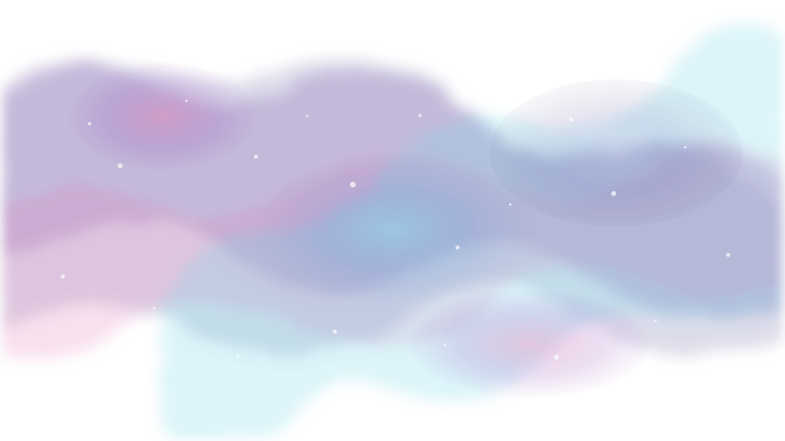

Galaxy Depth Artwork Preview
Layer stack preview for later implementation. The background uses watercolor-style violet, blue, magenta, and teal; foreground motifs stay cyan and cream.

Layer stack preview for later implementation. The background uses watercolor-style violet, blue, magenta, and teal; foreground motifs stay cyan and cream.
